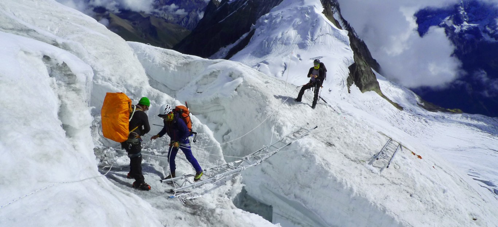

ABOUT
Mountains are the beginning and the end of all natural scenery.
What is mount manaslu?
Mt. Manaslu a part of Nepalese Himalayas in the Gorkha massif with an altitude of 8161m is world’s eighth highest peak. It is also known as Kutang. The location of this mountain peak is in Mansiri Himal in Gorkha district of Nepal. “Manasa” in Sanskrit means “Mountain of the Spirit” is converted to this Gorkha’s highest peak Mt. Manaslu as "intellect" or "soul".
Manaslu Trials
the great manaslu
Mt. Manaslu is situated about 40 miles east of Mt. Annapurna of Kaski District. Manaslu is an imposing mountain being a 3092m prominence it extends from crops cultivation area to the area permanently covered with snow and ice; hence it looks like a serrated wall of snow and ice hanging in the sky. Manaslu's long ridges and valley glaciers offer feasible approaches from all directions, and culminate in a peak that towers steeply above its surrounding landscape.
Manaslu region is located in Central Nepal and was opened to trekkers only in 1991. But lots of mountaineering expedition teams had access for long time. In 1950 a group headed by H.W. Tilman trekked this area for the first time and ever since this area has been quite popular among tuff trekkers. This area is still restricted to a limited number of groups and only organized trekkers in groups can trek in this area. Manaslu region is very remote and rescue is very difficult. This is possible wilderness area to live leopard of snow. Yet the trek is geographically spectacular and culturally fascinating. Lots of people residing in this area especially in the upper Buri Gandaki (river) Valley are Tibetan. A place in this valley called Nupri (meaning Western Mountain in Tibetan) is a trading center among Tibetans and Tibetans residing in these areas.
MOUNT MANASALU
Manaslu (8,152m) is an opportunity to enjoy quiet time trekking in pure bliss away from the noisy modern world.